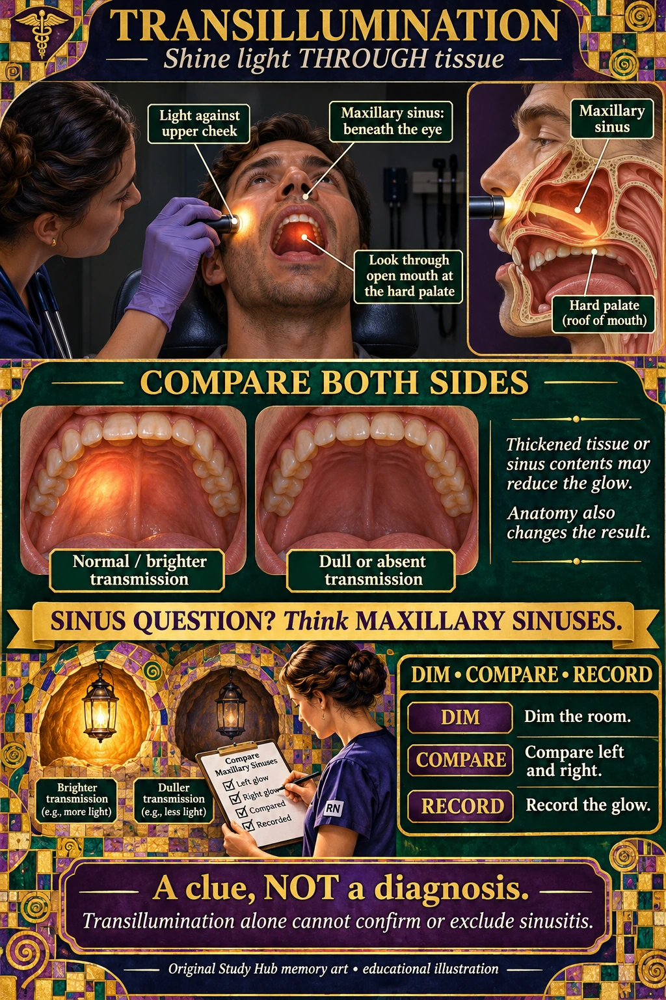

NUR 198 · UPPER RESPIRATORY ASSESSMENT / LABORATORY & DIAGNOSTIC TESTS
Transillumination: shine light through tissue
Trans = through. Illumination = light. A clinician uses a bright examination light in a darkened room and observes how much light passes through a body area. This is a bedside examination technique, not an X-ray. [1]
What it physically looks like

The glow is exaggerated for learning; this is an illustration, not a patient photograph.
Maxillary sinus transillumination
The maxillary sinuses lie in the cheek bones, beneath the eyes. One traditional examination method is:
- Dim the room and explain the examination.
- Place the appropriate light against the upper cheek, below the eye. Ask the person to open their mouth.
- Observe transmitted light at the hard palate—the roof of the mouth.
- Compare left and right using the same technique.
- Record the side and whether transmission is normal, dull or absent. [2] [3]
Mnemonic: DIM → COMPARE → RECORD. The paired lanterns represent the two sinuses and the amount of light transmitted.
What does the result mean?
- Brighter transmitted glow: more light passed through the examined area.
- Dull or absent glow: less light passed through. Thickened mucosa or sinus contents may contribute.
- Compare with the full assessment: sinus size, anatomy and examination technique also affect the glow. This test alone cannot confirm or exclude sinusitis. [4]
A sinus assessment also considers symptom duration, nasal findings and facial pain. CT or other testing is selected for the clinical situation; routine imaging is not needed for every uncomplicated acute sinus complaint. [5]
Why “maxillary sinuses” fits your question
Among the choices shown, maxillary sinuses are the structures examined with this sinus transillumination technique. The light-transmission pattern gives a clue about the sinus.
- Lymph nodes: generally assessed by inspection and palpation, with further testing when indicated.
- Salivary glands: examined by inspection and palpation; sinus transillumination does not evaluate them.
- Adult intercostal spaces: not the target of this sinus examination.
Context matters: specialized neonatal chest transillumination is used in some settings to assess suspected abnormal air. Therefore, “transillumination is never used on the chest” would be too broad. Other uses include assessment of a scrotal fluid collection such as hydrocele. What counts as an abnormal glow depends on the body area. [1] [2]
Simple Nursing: no dedicated transillumination handout was found in the current handout catalog. The infographic above is original Study Hub artwork; existing respiratory handouts remain on your course pages.
Free online sources and clinical illustrations
- MedlinePlus: Transillumination ↗ — uses, procedure and limitations.
- Clinical Methods: An overview of the head and neck ↗ — traditional examination technique; Figure 119.2 shows maxillary sinus transillumination.
- CDC/NHANES examination manual, section 16 ↗ — historical documentation of cheek-light placement and palate observation; not a current diagnostic guideline.
- Rhinosinusitis practice parameter update ↗ — poor sensitivity and specificity of transillumination alone.
- Merck Manual Professional: Sinusitis ↗ — clinical assessment and selective testing.